Molecular Stereochemistry 1
Chapter H3.5 · Molecular Stereochemistry Part 1
On this page
Introduction
Topic 11.1 Part 2 sorted isomers into two families: constitutional isomers, whose atoms are joined differently, and stereoisomers, whose atoms are joined in the same order but arranged differently in space (cis-trans isomers and enantiomers). H3 takes stereochemistry two steps further.
- First, we need to draw molecules in three dimensions precisely, and to read such drawings: wedge/hash drawings, sawhorse projections and, new here, Newman projections.
- Second, we look at the shapes a molecule takes as it rotates about its single bonds: its conformations. Some shapes cost more energy than others, and in rings the shapes decide which positions bulky groups prefer.
Part 2 then names configurations precisely (E/Z and R/S), counts stereoisomers and finishes with the stereoisomerism of complexes.
Keep one picture in mind throughout this Part: a molecule is not a rigid model on your desk. At room temperature its single bonds are spinning, millions of times a second.
Key terms
You will use these terms throughout the chapter.
| Term | Meaning |
|---|---|
| Stereochemical projection | Any two-dimensional drawing that shows the three-dimensional arrangement of the atoms of a molecule. |
| Wedge/hash drawing | A drawing in which a plain line is a bond in the plane of the page, a solid wedge a bond pointing towards you and a hashed wedge a bond pointing away from you. |
| Newman projection | The view straight along one C–C bond. The front carbon is the point where three bonds meet at the centre; the back carbon is a circle, and its bonds start at the circle's edge. |
| Dihedral angle, θ | The angle between a bond on the front carbon and a bond on the back carbon, as seen in a Newman projection (0° = one directly behind the other). |
| Conformation | One arrangement of the atoms of a molecule out of the many that interconvert by rotation about single (σ) bonds. |
| Conformational isomers (conformers) | Conformations at energy minima. They interconvert rapidly at room temperature, so they cannot normally be separated. |
| Staggered | A conformation in which the bonds on the front and back carbons are as far apart as possible (θ = 60°, 180°, 300°). |
| Eclipsed | A conformation in which each bond on the back carbon lies directly behind a bond on the front carbon (θ = 0°, 120°, 240°). |
| Anti | A staggered conformation with the two largest groups opposite each other, θ = 180°. |
| Gauche | A staggered conformation with the two largest groups next to each other, θ = 60° (or 300°). |
| Torsional strain | The extra energy of eclipsed bonds: the bonding electron pairs on neighbouring carbons are pushed close together. |
| Steric strain | The extra energy when two atoms or groups are pushed closer together than their sizes allow. |
| Chair and boat | The two puckered shapes of cyclohexane. The chair is free of strain; the boat is about 30 kJ mol−1 higher. |
| Axial and equatorial | The two kinds of bond on each carbon of a chair: axial bonds are parallel to the ring's axis, alternately up and down; equatorial bonds point outwards round the "equator" of the ring. |
| Ring flip | The conversion of one chair into the other by rotation about the ring's C–C bonds. Every axial bond becomes equatorial and every equatorial bond axial. |
| 1,3-Diaxial interaction | The steric strain between an axial group and the two axial H atoms on the same face of the ring, two carbons away on either side. |
Drawing molecules in three dimensions
You first met wedges and hashes for the shapes of molecules in Topic 2. A carbon atom with four single bonds is tetrahedral, with bond angles of 109.5°. A page has only two dimensions, so we use three kinds of line:
- a plain line for a bond in the plane of the page;
- a solid wedge for a bond pointing towards you, the narrow end at the atom in the page;
- a hashed wedge for a bond pointing away from you.
For a tetrahedral carbon the rule is: two bonds in the page, one wedge and one hash. Draw the two plain bonds at an angle, and put the wedge and the hash side by side in the space opposite them. Any drawing of this kind is called a stereochemical projection: a two-dimensional picture of a three-dimensional molecule.
Fig 1 shows one particular arrangement of butane drawn in three ways. In (a) the carbon chain is in the page and the four H atoms on C2 and C3 stick out in front of and behind it. In (b), a sawhorse projection, we look at the C2–C3 bond from above and to one side, so that C2 is nearer to us (lower left) and C3 further away (upper right). Sawhorse drawings are useful for seeing where the groups on neighbouring carbons are, but they are hard to draw well, and from here on we use the third kind, (c).1
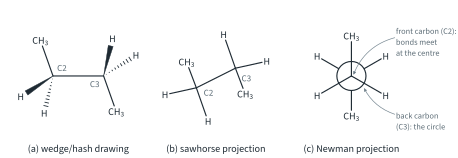
Newman projections
A Newman projection is the view straight along one C–C bond (Fig 1(c)). Because we look end-on, the front carbon hides the back carbon, and we draw them differently:
- the front carbon is the point where its three bonds meet, at the centre;
- the back carbon is the circle, and its three bonds start at the edge of the circle.
The three bonds on each carbon are 120° apart in the drawing. By convention a staggered Newman projection is drawn with one front bond pointing straight up. To draw one from a wedge/hash drawing, imagine standing at the front carbon and looking along the bond: groups on wedges come out on one side, groups on hashes on the other, and the group in the page points up or down.
The angle between a bond on the front carbon and a bond on the back carbon, measured round the circle, is the dihedral angle, θ. For butane we usually quote the angle between the two CH3 groups (Fig 2). In Fig 1 the two CH3 groups point in opposite directions: θ = 180°.
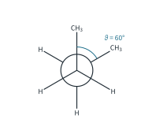
Worked example 1: drawing projections of butane
Draw the anti conformation of butane (θ = 180°) as a Newman projection along C2–C3. Then rotate the back carbon by 120° and give the new dihedral angle.
(To answer this, you have to put the groups of each carbon 120° apart and keep track of the two CH3 groups.) Front carbon C2 carries CH3 (C1) and two H; back carbon C3 carries CH3 (C4) and two H. With the front CH3 pointing up and the back CH3 pointing down, the CH3 groups are opposite: anti, θ = 180° (Fig 1(c)). Rotating the back carbon by 120° brings its CH3 to the upper right, next to the front CH3: θ = 60°, the gauche conformation (Fig 2). Rotating the back carbon does not break any bond, so this is still butane, in a different conformation.
Worked example 2: from a wedge/hash drawing to a Newman projection
Fig 3(a) shows (R)-butan-2-ol, CH3CH(OH)CH2CH3, in one staggered conformation, with the C2–C3 bond in the plane of the page. Draw its Newman projection along C2–C3 and state which groups are anti and which are gauche to the CH3 group on C3 (C4).
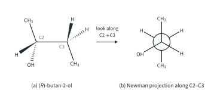
(To answer this, you have to stand at C2, look along the bond to C3, and decide which groups point up, left and right.) The CH3 group on C2 (C1) is in the page, pointing up; it stays up. The OH on the hash and the H on the wedge both point down-left in (a): looking from the left, the group coming towards the reader of (a) appears on the right of the Newman projection, and the group going away appears on the left. So on the front carbon: CH3 up, OH lower left, H lower right. On the back carbon C3: C4 points down, and the two H atoms upper left and upper right (Fig 3(b)).
Reading the angles from C4 (the CH3 on the back carbon): C1 is anti to C4 (θ = 180°), and the other two groups on C2 are both gauche to C4 (θ = 60°): the OH is gauche to C4, and so is the H on C2. The OH is anti to one of the H atoms on C3. Notice that the Newman projection is only a different view of the same molecule: the configuration at C2 is still (R) (Part 2 shows how to tell).
Rotation about a single bond: ethane
A σ bond is cylindrically symmetrical about the line joining the two nuclei, so the overlap of the orbitals that form it does not change as one carbon turns. That is why atoms can rotate about a single bond, unlike a C=C bond, where turning one end would break the π bond (Topic 11.1 Part 2). Rotation about a single bond is not completely free, though.
In ethane, CH3–CH3, the two extreme conformations are staggered (each C–H on the back carbon halfway between two on the front) and eclipsed (each C–H on the back carbon directly behind one on the front). The eclipsed conformation is higher in energy by about 12 kJ mol−1 (literature value). The extra energy is called torsional strain: in the eclipsed conformation the bonding electron pairs of the C–H bonds on neighbouring carbons are pushed close together, and the electron clouds repel.2 Ethane has three H/H eclipsings, so each one costs about 12/3 = 4.0 kJ mol−1.
As the back carbon turns through 360°, the molecule passes through three staggered and three eclipsed conformations, and its energy rises and falls three times (Fig 4).
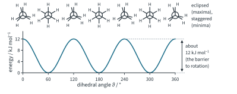
The 12 kJ mol−1 is the energy barrier to rotation. It is small next to the energy that molecules exchange in collisions at room temperature, so ethane rotates rapidly, and its conformations cannot be separated. The staggered conformation, at the minimum, is the conformer: at any instant most ethane molecules are close to staggered.
Butane: anti, gauche and eclipsed
Butane, CH3CH2CH2CH3, is more interesting. Looking along the C2–C3 bond, each carbon carries one CH3 group and two H atoms, and the conformations differ in where the two CH3 groups are. Fig 5 shows the six conformations at 60° steps.
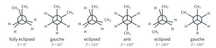
- Anti (θ = 180°): staggered, the CH3 groups as far apart as possible. The lowest energy.
- Gauche (θ = 60° or 300°): staggered, but the CH3 groups are next to each other. They are a little too close, so there is some steric strain.
- Eclipsed (θ = 120° or 240°): each CH3 group is eclipsed by an H atom.
- Fully eclipsed (θ = 0°): CH3 behind CH3, the highest energy: torsional strain and a lot of steric strain.
A useful model is to treat each interaction as a cost that can be added up. The costs below are literature values, rounded.
| Interaction | Kind of strain | Cost / kJ mol−1 |
|---|---|---|
| H/H eclipsed | torsional | 4.0 |
| CH3/H eclipsed | torsional and steric | 6.0 |
| CH3/CH3 eclipsed | torsional and steric | 11 |
| CH3/CH3 gauche | steric | 3.8 |
Worked example 3: the energy profile of butane
Use the costs in the table to estimate the energy of each conformation of butane relative to the anti conformation, sketch the energy profile, and find the barriers to rotation.
(To answer this, you have to list the interactions in each Newman projection of Fig 5, then add them up.)
anti (180°): no eclipsing, no gauche CH3/CH3 → 0
gauche (60°, 300°): one gauche CH3/CH3 → 3.8 kJ mol−1
eclipsed (120°, 240°): 2 × 6.0 + 4.0 = 16 kJ mol−1
fully eclipsed (0°): 11 + 2 × 4.0 = 19 kJ mol−1
In the eclipsed conformation (θ = 120°) each CH3 is eclipsed by an H (two CH3/H) and the remaining pair of H atoms eclipse each other (one H/H). In the fully eclipsed one, CH3 is behind CH3 and the two pairs of H atoms eclipse each other. Joining these points with a smooth curve gives Fig 6.
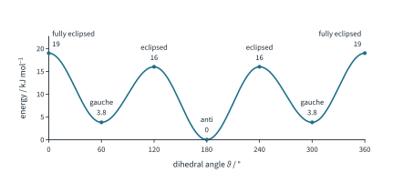
Read the barriers from the profile. Going from anti to gauche, a molecule must pass the eclipsed conformation at 120°: the barrier is about 16 − 0 = 16 kJ mol−1. Going back from gauche to anti it needs only about 16 − 3.8 ≈ 12 kJ mol−1. The highest barrier, through the fully eclipsed conformation, is about 19 kJ mol−1.
Butane therefore has two kinds of conformer: the anti conformer and a pair of gauche conformers (60° and 300°, mirror images of each other). At room temperature butane is mostly anti, but the barriers are small, so the molecules still rotate rapidly from one conformer to another and the conformers cannot be separated.
Cyclohexane: chair and boat
9813 asks about the stereochemistry of saturated ring systems, and cyclohexane, C6H12, is the most important ring in organic chemistry. If its six carbon atoms were in a flat hexagon, the C–C–C angles would be 120°, wider than the tetrahedral 109.5°, and every C–H bond would be eclipsed by the C–H bonds on the next carbon (twelve H/H eclipsings). A flat ring would be badly strained. So the ring puckers.
The puckered shape that removes all the strain is the chair (Fig 7(a)): four carbon atoms in one plane, one end carbon above it and the other below it, like a reclining chair.
- Its C–C–C angles are about 111° (literature value), very close to 109.5°: no angle strain.
- Viewed along any ring C–C bond, every bond is staggered (Fig 7(c), where two such Newman projections are drawn side by side): no torsional strain.
A second puckered shape is the boat (Fig 7(b)), with both end carbons up. It is about 30 kJ mol−1 less stable than the chair (literature value), for two reasons:
- two H atoms, one on each end carbon, point towards each other across the ring. These flagpole H atoms are too close: steric strain;
- the C–H bonds along the two sides of the boat are eclipsed: torsional strain.3
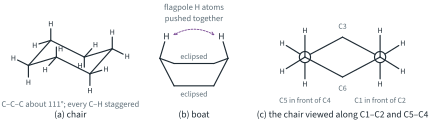
Axial and equatorial bonds
Each carbon of a chair has two C–H bonds, and they are not alike (Fig 8):
- one is axial: parallel to the axis of the ring, pointing straight up or straight down. The axial bonds alternate, up on one carbon, down on the next;
- the other is equatorial: pointing outwards, roughly round the "equator" of the ring.
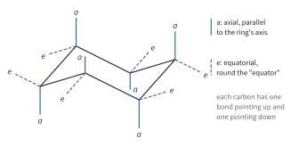
So a chair has six axial and six equatorial positions. On every carbon, one of the two bonds points up (towards the top face of the ring) and the other down. On a carbon that is an "up" corner of the chair the axial bond points up and the equatorial bond slightly down; on a "down" corner it is the other way round.
Drawing chairs takes practice, and a chair drawn badly is hard to read. Fig 9 shows a reliable method.
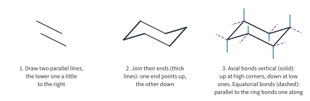
The ring flip
A chair is not fixed. By rotating about its ring C–C bonds, without breaking any bond, the ring can turn into the other chair: the end that pointed up now points down, and vice versa. This is the ring flip (Fig 10). In the flip, every axial bond becomes equatorial and every equatorial bond becomes axial. But a bond that pointed up still points up: in Fig 10, Ha on C1 is axial and up in chair A, and equatorial and still up in chair B.
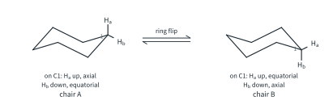
On the way from one chair to the other, the ring passes through higher-energy shapes (Fig 11). The highest point is the half-chair, about 45 kJ mol−1 above the chair (literature value); this is the barrier to the ring flip. The boat (30) and a slightly twisted boat (about 23) lie between the two half-chairs.4
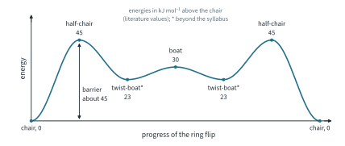
A barrier of 45 kJ mol−1 is still small enough for the ring to flip about 105 times a second at room temperature (literature value, order of magnitude). So a cyclohexane with one substituent is a rapidly interconverting mixture of two chair conformers, and the two cannot be separated at room temperature.
Methylcyclohexane and tert-butylcyclohexane
Worked example 4: methylcyclohexane
Methylcyclohexane has two chair conformers: CH3 axial and CH3 equatorial. Explain which is more stable, and estimate the energy difference using the gauche cost of butane.
(To answer this, you have to find what the CH3 group is close to in each chair.) In the chair with the CH3 axial (Fig 12(a), left), the CH3 on C1 points straight up, parallel to the axial H atoms on C3 and C5, which also point up on the same face of the ring. They are close: two 1,3-diaxial interactions ("1,3" because C3 and C5 are each two carbons from C1). In the equatorial chair the CH3 points away from the ring and has no such neighbours.
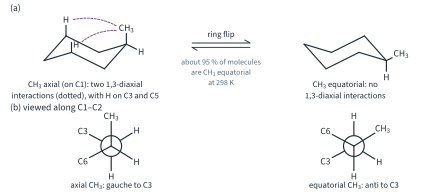
Fig 12(b) shows where the strain comes from. Viewed along C1–C2, the axial CH3 is gauche to C3 (θ = 60°), just like the two CH3 groups of gauche butane; the equatorial CH3 is anti to C3. Viewing along C1–C6 gives the same again with C5. So an axial CH3 has two gauche-butane interactions:
2 × 3.8 = 7.6 kJ mol−1
This is close to the measured difference of 7.3 kJ mol−1 (literature value). The equatorial chair is more stable, and at 298 K about 95 % of methylcyclohexane molecules have the CH3 group equatorial (literature value).5
A larger group pays a larger price. In tert-butylcyclohexane, an axial C(CH3)3 group would have to point one of its CH3 groups straight at the axial H atoms on C3 and C5, however it turned (Fig 13). The equatorial preference is about 21 kJ mol−1 (literature value), and effectively all the molecules have the tert-butyl group equatorial. The ring still flips in principle, but the other chair is so unfavourable that it is hardly ever present: we say the tert-butyl group "locks" the ring.
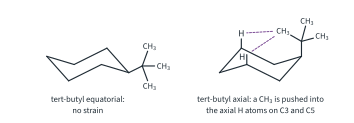
Disubstituted cyclohexanes
A ring cannot rotate about its ring bonds without breaking the ring, so, like a C=C bond, it holds two substituents on fixed sides (Topic 11.1 Part 2, footnote 2). Two groups on a ring are
- cis if they are on the same face of the ring (both up or both down);
- trans if they are on opposite faces.
The easiest way to show this is to draw the ring flat, as a regular hexagon, with each group on a wedge (up) or a hash (down) (Fig 14). cis and trans isomers are different compounds; a ring flip cannot turn one into the other, because it never changes up and down.
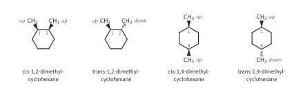
To decide where the groups go in a chair, translate up and down into axial and equatorial:
Worked example 5: 1,2-dimethylcyclohexane
Draw both chairs of cis- and of trans-1,2-dimethylcyclohexane. Say which chair of each is preferred, and which isomer is more stable.
(To answer this, you have to remember that neighbouring ring carbons are one "up" and one "down" carbon.) C1 and C2 are neighbours. In chair A of Fig 15, C1 is a down carbon, so C2 is an up carbon.
- cis (both CH3 up): on C1 up is equatorial; on C2 up is axial: equatorial, axial. After a ring flip: axial, equatorial. The two chairs have the same energy (one axial CH3 each), so they are present in equal amounts.
- trans (C1 down, C2 up): on C1 down is axial; on C2 up is axial: axial, axial. After a ring flip: equatorial, equatorial, which is strongly preferred (no axial CH3).
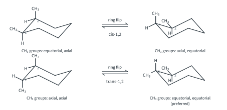
So the trans isomer is more stable: its preferred chair has no axial CH3, while every chair of the cis isomer has one. (Both isomers also have the two CH3 groups gauche to each other, viewed along C1–C2, in the diequatorial or axial-equatorial chair, so this small extra cost does not change the comparison.)
Worked example 6: 1,4-dimethylcyclohexane
Repeat worked example 5 for 1,4-dimethylcyclohexane.
(To answer this, you have to see that C1 and C4 are three bonds apart, so one is an up carbon and the other a down carbon. In chair A of Fig 16, C1 is an up carbon.)
- cis (both up): C1 up = axial, C4 up = equatorial: axial, equatorial ⇌ equatorial, axial. Equal energies.
- trans (C1 up, C4 down): both axial ⇌ both equatorial, strongly preferred.
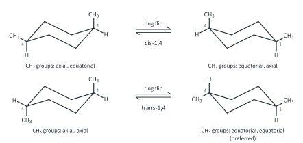
Again the trans isomer is more stable, by about 7 kJ mol−1: the cis isomer always has one axial CH3 (about 7.3 kJ mol−1), and the preferred chair of the trans isomer has none.
Part 2 asks which of these compounds are chiral.
Summary
The ideas of Part 1 and the numbers to remember.
| Idea | What to remember | Example |
|---|---|---|
| Newman projection | Look along one C–C bond: front carbon = centre point, back carbon = circle; dihedral angle θ read directly. | butane, Figs 1 and 5 |
| Staggered and eclipsed | Eclipsed bonds cost energy (torsional strain). | ethane: barrier about 12 kJ mol−1 |
| Anti and gauche | Bulky groups close together cost energy (steric strain); costs add up. | butane: gauche 3.8, eclipsed 16, fully eclipsed 19 kJ mol−1; mostly anti |
| Chair and boat | Chair: angles about 111°, all bonds staggered, no strain. Boat about 30 kJ mol−1 higher (flagpole H, eclipsing). | cyclohexane |
| Ring flip | Axial ⇌ equatorial; up stays up. Barrier about 45 kJ mol−1; about 105 flips per second. | Figs 10 and 11 |
| Axial and equatorial | Large groups prefer equatorial (1,3-diaxial interactions). | CH3: 7.3 kJ mol−1, about 95 % equatorial; tert-butyl: about 21 kJ mol−1, locked |
| cis and trans in rings | cis = same face; up/down method gives axial or equatorial. | 1,2- and 1,4-dimethylcyclohexane: trans more stable |
Additional information
- Fischer projections, another kind of stereochemical projection used for sugars and amino acids, are not required in 9813. ↩
- Why eclipsed bonds repel is still discussed by chemists; the simple picture used here is repulsion between the bonding electron pairs. ↩
- Beyond the syllabus: the boat twists slightly to relieve some of this strain, giving the twist-boat, about 23 kJ mol−1 above the chair (literature value). The twist-boat appears in Fig 11 but is not required. ↩
- The half-chair is the transition state of the ring flip (Topic 7 Part 1 energy profiles): the highest point between two chairs. Five carbon atoms are roughly in one plane, so several bonds are eclipsed and the angles are strained. ↩
- Beyond the syllabus: the energy by which a group prefers the equatorial position is often called its A-value (CH3 about 7.3, tert-butyl about 21 kJ mol−1). ↩